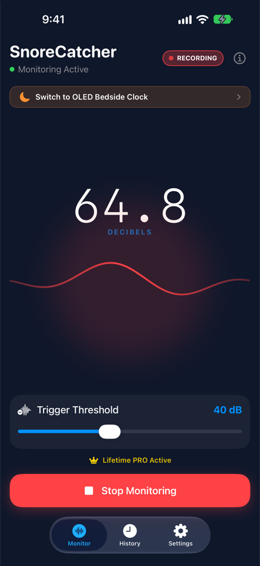
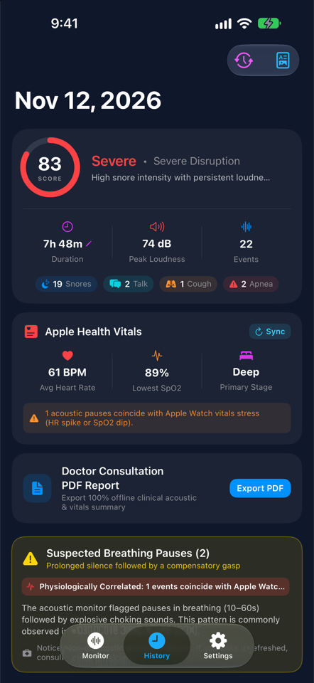
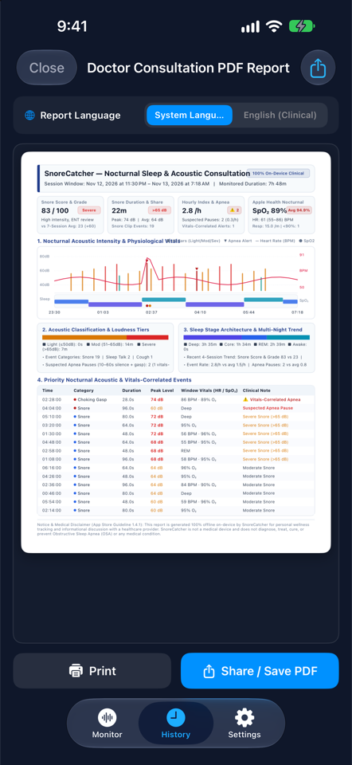
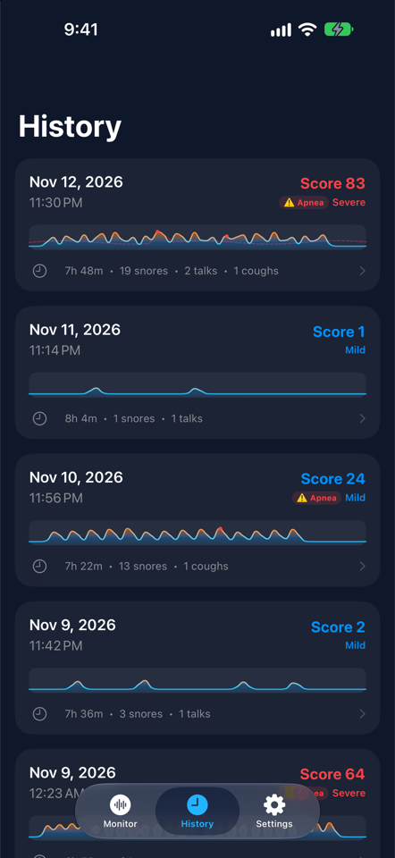

Hear Every Snore, Sleep Talk & Vitals Shift — Privately.
Lock your iPhone at bedtime and let on-device Apple SoundAnalysis capture snoring, sleep talking, coughing, and suspected breathing pauses — aligned with Apple Watch heart rate & SpO2 and ready as a 1-page Doctor PDF report in 9 languages.


Multi-Sound AI & Vitals Correlation Simulator
Test how SnoreCatcher combines dynamic ambient noise calibration, Apple SoundAnalysis classification, and Apple Watch SpO2 / heart rate alignment in real time.
Native iOS 17+ Dark Interface
Zero blinding white flashes at midnight. Adaptive layouts engineered for iPhone, iPad, and foldable displays across 9 native languages.
Locked-Screen & OLED Standby
10Hz decibel meter, dynamic threshold control, and one-tap #000000 True-Black OLED Bedside Clock.
Snore Score & Watch Vitals
0–100 clinical weighted Snore Score paired with Apple Watch heart rate spikes and SpO2 desaturation checks.

1-Page Doctor PDF Report
Generate structured offline A4 sleep summaries with 7-night baselines in 9 languages for ENT visits.

Multi-Night Trend & Playback
Compare nightly scores, scrub interactive waveforms, skip silence, and boost quiet clips up to 8x (+18 dB).
Everything You Need to Understand Your Sleep
Built with Swift 6 concurrency, Accelerate vDSP, Apple SoundAnalysis, and HealthKit — delivering medical-grade clarity while keeping every recording strictly on your iPhone.
Locked-Screen Overnight Engine
Plug into power, tap Start, and lock your iPhone. Dual-mode background capture with 3-second pre-roll buffering and automatic alarm/call interruption recovery never misses an episode.
4-Class On-Device Sound AI
Apple SoundAnalysis distinguishes Snoring, Sleep Talking, Coughing, and Suspected Breathing Pauses (10–60s silence followed by a compensatory gasp) while rejecting AC and fan hum.
Apple Watch Vitals Alignment
Bi-directional HealthKit sync logs in-bed sleep and coughs while overlaying nocturnal Heart Rate, Blood Oxygen (SpO2), and Deep/Core/REM sleep stages directly onto your audio timeline.
Gentle Watch & Bedside Haptic Nudge
Mirrors gentle wrist vibrations to Apple Watch while locked and triggers bedside iPhone Taptic nudges to encourage side-sleeping — using single-alert replacement so notifications never stack.
1-Page Doctor Consultation PDF
Export a clean, 100% offline PDFKit summary featuring 7-session historical baselines, loudness tier breakdowns, and vitals-correlated apnea events for ENT or sleep clinic consultations.
110Hz Denoise & 8x Playback Boost
Scrub interactive waveforms with smart silence skipping, strip low-frequency room hum via a 110Hz high-pass filter, and amplify quiet recordings by 2x, 4x, or 8x (+18 dB) without clipping.
Remedy Tracking & Window Trim
Log nasal strips, side-sleeping pillows, congestion, or alcohol to measure what truly lowers your Snore Score, and trim awake bedtime reading windows with a tap.
True-Black OLED Bedside Clock
Pure #000000 pixel-off standby clock with dimmable warm amber/red night digits protects melatonin, prevents thermal buildup, and eliminates OLED burn-in.
Instant 9-Language Switcher
Switch live in Settings without restarting across English, Simplified & Traditional Chinese, Japanese, Korean, German, Spanish, French, and Portuguese — syncing UI and PDF reports alike.
Fair, Transparent Access — Never Rent Your Sleep
Most sleep apps lock basic audio playback behind $59/year auto-renewing paywalls. SnoreCatcher keeps core tracking free forever and lets you own Lifetime PRO for the price of a coffee.
- ✓Locked-screen overnight AI detection (Snore, Talk, Cough, Apnea)
- ✓7-day local clip history, waveform playback & m4a audio export
- ✓Apple Health & Apple Watch HR / SpO2 vitals timeline sync
- ✓110Hz noise reduction, 8x volume boost & OLED Bedside Clock
- ✓Unlocks 100% of PRO features free for a full 24 hours
- ✓Apple Watch & bedside gentle snore haptic nudge
- ✓Unlimited 1-page Clinical Doctor PDF Report exports
- ✓Zero banner or interstitial ads for 24 hours
- ★Permanent Apple Watch & bedside haptic snore intervention
- ★Unlimited 9-language Doctor Consultation PDF Reports
- ★100% ad-free forever (ad SDK completely bypassed at launch)
- ★Includes Apple Family Sharing for up to 5 family members